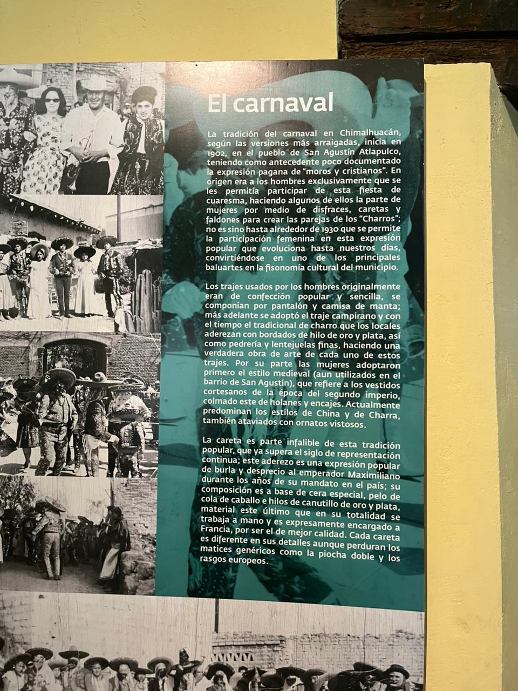
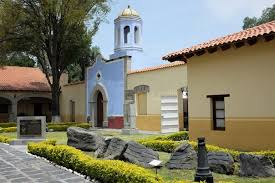
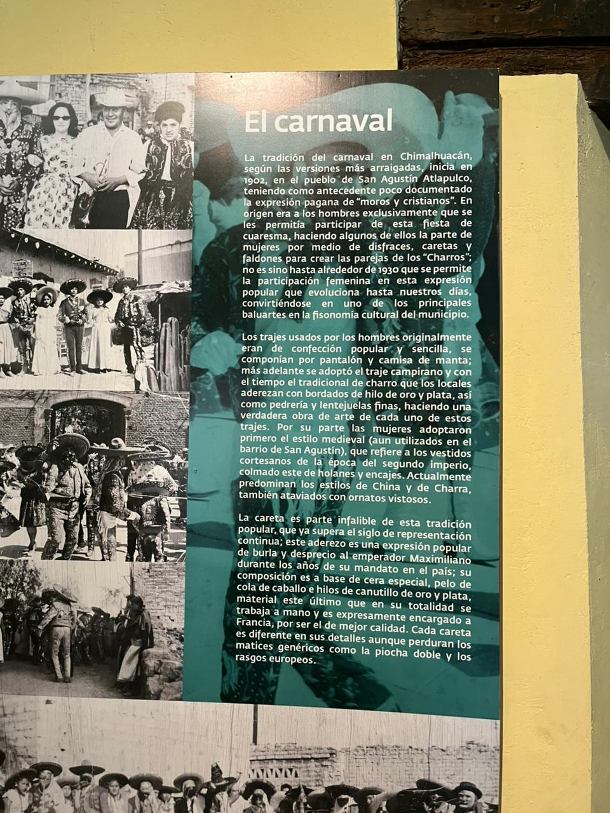
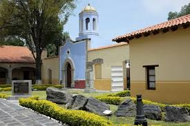

üè∫ Museo Canto del Cincel
El Museo Canto del Cincel es un espacio dedicado a la preservación y promoción de la cultura local. A través de exposiciones y talleres, el museo busca acercar a la comunidad a su patrimonio cultural y artístico.
üìç Ubicaci√≥n
Situado en el centro de Chimalhuacán, el museo es fácilmente accesible y está rodeado de otras atracciones culturales y recreativas.
üé® Exposiciones y Actividades
El museo alberga diversas exposiciones temporales y permanentes que destacan el arte y la tradición de la región, así como talleres para niños y adultos.
üïí Horarios
El museo abre sus puertas de martes a domingo, de 10:00 a 18:00 horas. Los lunes permanece cerrado al público.
üéüÔ∏è Entradas
La entrada al museo es gratuita, lo que permite a todos disfrutar de las exposiciones y actividades sin costo alguno.
üë• Visitas Guiadas
Se ofrecen visitas guiadas para grupos escolares y turistas, con el fin de proporcionar una mejor comprensión de las exposiciones y la historia local. Se recomienda reservar con anticipación.
üõçÔ∏è Tienda de Souvenirs
El museo cuenta con una tienda de souvenirs donde los visitantes pueden adquirir artesanías locales, libros y otros recuerdos relacionados con la cultura de Chimalhuacán.
üå± Proyectos Comunitarios
El museo participa en proyectos comunitarios que buscan fomentar el desarrollo cultural y social de la región, involucrando a la población en actividades artísticas y educativas.
üåç Accesibilidad
El Museo Canto del Cincel es accesible para personas con discapacidad, con rampas y servicios adaptados para garantizar que todos puedan disfrutar de su visita.
üèõÔ∏è Museo Chimaltonalli
El Museo Chimaltonalli es un espacio que celebra la historia y cultura de Chimalhuacán. Ofrece una mirada profunda a las tradiciones, costumbres y la evolución de la comunidad a lo largo de los años.
üìç Ubicaci√≥n
Ubicado en una zona estratégica, el museo es de fácil acceso para los visitantes y está cerca de otros puntos de interés en Chimalhuacán.
üéâ Eventos y Programas
El museo organiza eventos culturales, charlas y actividades educativas que fomentan el interés por la historia y la cultura local, creando un espacio de aprendizaje y convivencia.
üñºÔ∏è Colecci√≥n Permanente
El museo alberga una colección permanente que incluye artefactos históricos, obras de arte y objetos que representan la rica herencia cultural de Chimalhuacán, permitiendo a los visitantes explorar la historia local de manera interactiva.
üë• Programas Educativos
Se ofrecen programas educativos para escuelas y grupos comunitarios, diseñados para sensibilizar a los jóvenes sobre la importancia de la historia y la cultura de su localidad, fomentando el aprendizaje activo y la participación.
üìö Biblioteca y Centro de Investigaci√≥n
El museo cuenta con una biblioteca y un centro de investigación que proporciona recursos sobre la historia y cultura de Chimalhuacán, apoyando a investigadores, estudiantes y al público en general en su búsqueda de conocimiento.
üé® Talleres Art√≠sticos
Se realizan talleres artísticos donde los visitantes pueden aprender técnicas tradicionales de arte y artesanía, promoviendo la creatividad y la preservación de las tradiciones culturales locales.
üåç Proyectos de Conservaci√≥n
El museo está involucrado en proyectos de conservación del patrimonio cultural y natural de Chimalhuacán, trabajando en colaboración con la comunidad para preservar su legado para las futuras generaciones.
ü§ù Colaboraciones Comunitarias
El museo fomenta colaboraciones con organizaciones locales, artistas y académicos, creando una red de apoyo que fortalece la cultura y la identidad de Chimalhuacán a través de diversas iniciativas y proyectos conjuntos.
 


